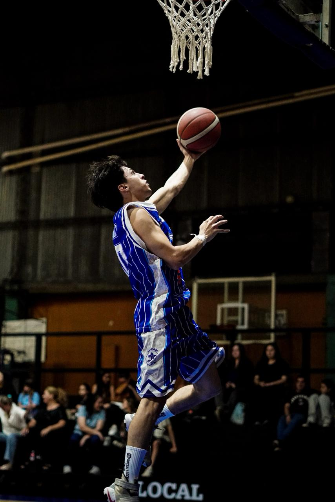

Tecnología y Gaming
Me apasiona el mundo de la informática. Disfruto mucho aprender sobre computadoras, pero mi actividad favorita es jugar videojuegos.
Deportes y Vida Sana
El deporte es una parte fundamental de mi día a día. Practico Básquet y me gusta salir a correr frecuentemente.

Actividades al Aire Libre
Me encanta pasar tiempo con mi perro. Salir a correr con mi mascota es uno de los momentos que más disfruto.
Entretenimiento y Cultura
En mis tiempos libres, también soy un gran seguidor de:
- Series de diversos géneros.
- Lectura de cómics.
- Seguimiento de eventos deportivos nacionales e internacionales (LPF/NBA).